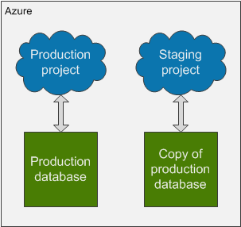
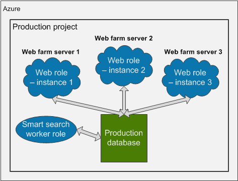
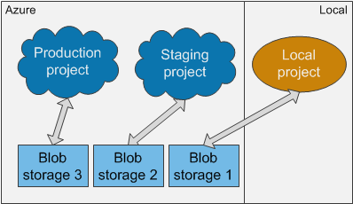

Developing for Microsoft Azure - best practices
There are usually several different ways of how to set up the development environment for your Kentico projects running on Azure. This page provides our recommendations on the best options, explains several pitfalls you might encounter and offers solutions to certain problems.
Please note that some recommendations apply only to certain Azure environments, so proceed with the topics that apply to your environment.
Azure Web Apps
WEB APPS
Standard server connected to an Azure Blob Storage
BLOB STORAGE Details: Configuring Azure storage
Database
General rule: every deployment and every project must be connected to its own database, and only one database.
Production and staging deployments have individual databases
Applies to: WEB APPS CLOUD SERVICES
When you use a staging environment to test your website before promoting it to production, always use different databases for each deployment (slot). This ensures that your staging deployment, does not damage your production database.

Setup of Azure deployment slots for production and staging
To set up your projects this way, modify the connection string in your local project to connect to a different database (you can create a copy of your production database through the Azure management portal) than your production project before you deploy the project to the staging slot.
If you need to switch the staging and production deployments but not the databases, you can set different connection strings in the Azure Management Portal.
For web apps:
Select your App service in the management portal.
Open the Application settings tab.
Configure the CMSConnectionString in the Connection strings section to connect either to the product or the copied database.
For cloud services:
Select your Cloud service in the management portal.
Open the Configuration tab.
Select Production or Staging slot and configure the CMSConnectionString key to connect either to the production database or the copied database.
One deployment has one production database
Applies to: WEB APPS CLOUD SERVICES
If you want to increase the number of web role instances in your production project to create a web farm, always use only one database for the whole deployment.
By increasing the number of web role instances, you assign more virtual machines to your project. This creates a web farm. Using the Automatic web farm functionality, the system creates web farm servers dynamically according to the assigned virtual machines (instances). See Setting up web farms for more information on web farm functionality.
However, for the web farm to work, all web role instances of your cloud service must use the same database. The only thing you need to do is to set one connection string for your whole production project.

Web farm environment of an Azure production project
Note: Do not increase the number of instances of the Smart search worker role.
Geo-replication
Please note that Kentico does NOT support geo-replication for databases. You can use some of the following recommendations instead:
Scale your application to multiple instances for load balancing.
Use Content Delivery Network to speed up delivery of files.
Use two separate environments synchronized through content staging.
Database connections limit
Applies to: WEB APPS CLOUD SERVICES
If you need to adjust the database connections limit using the Max Pool Size attribute in the connection string, see Azure SQL Database resource limits.
When setting the limit, the value is for all web roles and worker roles combined (in case of Azure Cloud Services). This means that if you want to set the maximum limit of concurrent requests to the database to 180 and you have 2 CMSApp web roles and one SmartSearchWorker role, then you should set the pool to the maximum size of 60.
<connectionStrings> <add name="CMSConnectionString" connectionString="Data Source=tcp:YourServerName.database.windows.net,1433;Initial Catalog=YourDatabaseName;User Id=YourUsername@YourServerName;Password=YourPassword;Max Pool Size=60" /></connectionStrings>There is no need to adjust this value if you do not have specific reasons to do so or encounter the error 10928.
Web farms
The number of instances (web farm servers) being used is not higher than the number of web farm servers included in your license
Applies to: WEB APPS CLOUD SERVICES
Do not increase the number of instances of your Azure project unless you have obtained a license with a corresponding number of web farm servers included. If you increase the number of instances beyond the number your license allows, the web farm server functionality will stop working completely.
Please contact your account manager to obtain a license for a higher number of web farm servers before increasing the number of instances in your Azure project.
Web.config keys related to web farms are not set
Applies to: CLOUD SERVICES
Please do not configure any web.config keys related to web farms in your Azure projects. The Azure projects have web farms configured automatically and setting these keys may disrupt the system.
Web farm mode setting is set by the system
Applies to: CLOUD SERVICES
Because Azure projects have web farm mechanisms configured automatically, the Web farm mode setting which you can configure in the administration interface does not have any effect on the system. You can find the setting in the Settings application -> Versioning & Synchronization -> Web farm.
The other settings, that can be used on Azure, are described in Settings - Web farm.
Enabling web farms on Azure Web Apps
This section applies only to Azure projects deployed in Azure Cloud Services. Other projects do not have web farms configured automatically and these settings work as usual. If you create an Azure Web App by deploying a project from Visual Studio (see Creating Web Apps from Visual Studio), you need to enable web farm functionality manually. See Enabling web farms on Azure Web Apps for details.
Storage
Each development, staging or production environment has its own blob storage
Applies to: CLOUD SERVICES
We recommend that every environment you use (local project, staging deployment or production deployment) is connected to a different Azure blob storage. If you use only one storage for all your environments, the system will be inconsistent. For example, deleting a media library file in the local project will lead to missing references in the production project, if the file is used there. You can also configure your projects to use different containers on one blob storage – see the next section.

Using a different storage for each development or production environment
We also recommend that you implicitly connect your local development project to an Azure blob storage instead of the default locally emulated storage. Using the Azure blob storage from the beginning allows you to access the storage from anywhere and may prevent difficulties when moving files between local file system and the blob storage. If you do not abide by this recommendation, you will have to update all media links manually after you move the media files to the blob storage. Or, you will have to deploy the media files together with the project in its file system, which can be problematic, as this usually greatly increases the size of the deployment package.
For synchronizing files and changes between the different storages of each environment, you can use the Content staging module. However, the CMSHashStringSalt key value in the web.config file must be identical in all environments for the Staging module to work properly. See the next section for details.
Each project has its own blob storage or blob storage container
Applies to: WEB APPS CLOUD SERVICES BLOB STORAGE
If you have multiple projects connected to Azure Blob Storage, for example for testing and production, every project must have its own blob storage or at least a different blob storage container configured.
To configure your projects to use different containers, add the following key to the web.config file with the name of the new container as its value. Set a different value for each project.
CMSAzureRootContainer - this key specifies the name of the blob container that will serve as the root of the application's file system on the Azure Blob Storage account. The default value is cmsstorage.
<add key="CMSAzureRootContainer" value="CustomRoot"/>The CMSHashStringSalt key is identical in all environments
Applies to: WEB APPS CLOUD SERVICES all projects that use Content staging
The CMSHashStringSalt key defines the salt value that the system uses in hash functions, for example in macro signatures and media library links. For the content to be synchronized properly through Content staging, the value of this key must be identical in all environments you use. Otherwise, the hash values of objects will be different in different environments. Therefore, make sure that the value of this web.config key is set to a single static value, for example a random GUID, before you deploy your project to the Azure environment.
<appSettings> <add key="CMSHashStringSalt" value="eb2d6fac-8b9e-427c-b98b-3c562dffbb35" /></appSettings>Media files stored on blob storage are divided into folders
Applies to: WEB APPS CLOUD SERVICES BLOB STORAGE
Storing a large number of media files in a single folder can significantly affect the performance of your project when editing the files in the Media library application.
Instead of storing all files in one folder, create a structure and divide the files into multiple folders. The number of files in one folder directly affects the performance of the Media library user interface.
The Web analytics storage folder is mapped to the server file system
Applies to: CLOUD SERVICES
By default, web analytics logs are also stored on the blob storage. The Web analytics module writes and processes logs every minute, which can cause problems on the blob storage with latencies. Moreover, the Web analytics module can create a large number of files, which further degrades the performance of the blob storage.
We highly recommend that you map the folder which stores Web analytics data to the file system of the server. See Mapping the Web analytics storage folder to the server file system for instructions.
Azure Web Apps have the blob storage configured in one of the recommended ways
Applies to: WEB APPS
See Increasing storage capacity on Azure Web Apps.
Temporary and cached files
Deleting files from the AzureCache and AzureTemp folders
Applies to: WEB APPS CLOUD SERVICES BLOB STORAGE
If Kentico is connected to the Azure Blob Storage, it creates two storage folders, AzureCache and AzureTemp, in its own file system. These folders store temporary files and their capacity is limited by default. If your project depletes the allocated space, local smart search indexes may stop working or media libraries may stop accepting files. This can result in the following error:
If this happens, you can temporarily solve these problems by cleaning the AzureCache and AzureTemp folders. In order to solve the problem permanently, see Preventing Azure cache folders from bloating.
To delete files in AzureCache and AzureTemp folders:
Connect to your project.
Web Apps - you can use FTP or Visual Studio, etc.
Cloud Services - use remote desktop. In the Azure management portal, open your cloud service on the Instances tab and click Connect. Download the remote desktop file, run it and submit remote desktop credentials.
Locate the C:\Resources\Directory\<GUID>.CMSApp.AzureCache and C:\Resources\Directory\<GUID>.CMSApp.AzureTemp folders and clean the temporary files from them.
Increasing the size of AzureCache and AzureTemp folders
Applies to: CLOUD SERVICES
To increase the size of these folders:
Open your Azure project in Visual Studio.
Double-click the CMSApp role in CMSAzure\Roles folder.
Switch to the Local Storage tab.
On this tab, you can set the size of these folders in Megabytes.
The Clean on role recycle option defines if the folder should be emptied when the web role is re-imaged form the deployment package (can happen automatically after updates).
You can also set the size of these folders in the ServiceDefinition.csdef file:
<LocalResources> <LocalStorage name="AzureTemp" cleanOnRoleRecycle="true" sizeInMB="100000"/> <LocalStorage name="AzureCache" cleanOnRoleRecycle="false" sizeInMB="100000"/></LocalResources>You can find details about the allocated resources for web roles in the following article: Sizes for Cloud Services (section Sizes for web and worker role instances). The local resource disk for the default Small web role instance is 224 GB large.
Preventing Azure cache folders from bloating
Applies to: WEB APPS CLOUD SERVICES BLOB STORAGE
See Preventing Azure cache folders from bloating for more recommendations on how to keep these folders from getting full.
Locally stored search indexes
To find tips about using local search indexes when running on Azure, see: Troubleshooting local search indexes on Azure